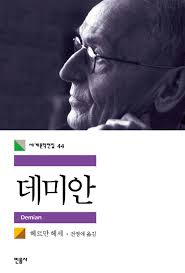

데미안

목록
작가 소개 - 헤르만 헤세 (Hermann Hesse, 1877.7.2 ~ 1962.8.9)
1877년 독일 남부 칼브에서 선교사의 아들로 태어났다.
어린 시절 시인이 되고자 수도원 학교에서 도망친 뒤 시계 공장과 서점에서 수습사원으로 일했으며, 열다섯 살 때 자살을 기도해 정신병원에 입원하는 등 질풍노도의 청소년기를 보냈다.
이십 대 초부터 작품 활동을 시작하여 [페터 카멘친트],[수레바퀴 아래서],[인도여행],[크눌프] 등을 발표했다.
스위스 몬타뇰라로 이사한 1919년을 전후로 헤세는 개인적인 삶에서 커다란 위기를 겪고, 이로 인해 그의 작품 세계도 전환점을 맞이한다.
술과 여인, 그림을 사랑한 어느 열정적인 화가의 마지막 여름을 그린 [클링조어의 마지막 여름]과 [데미안]이 바로 이 시기를 대표하는 작품들이다.
헤세는 이 작품들과 더불어 소위 '내면으로 가는 길'을 추구하기 시작했다.
헤세가 그림과 인연을 맺은 것도 이 무렵이며, 이후 그림과 음악을 더불어 헤세의 평생지기가 되었다.
그는 이어 [싯다르타],[황야의 이리],[나르치스와 골드문트],[동방순례],[유리알 유희]등 전 세계 독자들을 매료하는 작품들을 발표하였고, 1946년에 노벨 문학상을 수상했다.
1962년 8월, 제 2의 고향인 스위스 몬타뇰라에서 영면했다.
줄거리
따스한 가정, 다정한 부모님 아래서 자라며 '선의 세계'만을 알았던 싱클레어는 동네 소년 프란츠 크로머에게 도둑질을 했다는 허풍을 떨면서 '악의 세계'또한 깨우치게 된다.
어느 날 그런 싱클레어 앞에 나타난 신비한 소년 데미안은 그에게 성서에 등장하는 카일과 아벨의 이야기를 통해 선과 악의 진실에 대해 하나씩 가르치기 시작한다.
내면의 선악 사이에서 고뇌하던 싱클레어는 유혹을 이기지 못하고 거리로 나가 금지된 쾌락을 추구하며 타락하기도 하나 베아트리체를 만나면서 어두운 내면을 이겨 낸다.
싱클레어는 베아트리체의 초상을 그리지만 그 초상화는 어느새 데마안과 닮아 있었다.
데미안에 대한 동경과 강렬한 그리움이 베아트리체에서 데미안을 보게 한 것이다.
그러던 어느 날 싱클레어는 길에서 데미안과 그의 어머니 에바 부인을 만나고 그 재회 이후 에바 부인이야말로 자신의 내면에 존재하던 여인이라는 것을 깨닫는다.
얼마 뒤 전쟁이 발발하고, 그 전쟁에 참전한 데미안과 싱클레어는 야전 병원에 누워 대화를 나눈다.
자신이 필요할 때면 자기 안에 귀를 기울이라는 말을 남긴 데미안은 다음 날 아침 사라져 버리고, 싱클레어는 어느새 데미안과 똑같아진 자신의 모습을 마음속에서 찾아낸다.
후기
아직 다 안읽었다.
목록